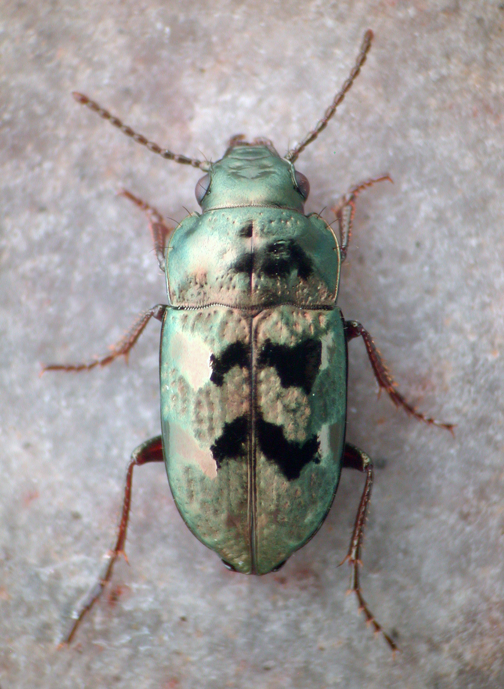

Introduction to the SOWH test
The Swofford-Olsen-Waddell-Hillis (SOWH) test is designed to allow one to test phylogenetic structure. For example, one might have done a phylogenetic analysis, and the resulting tree suggested that a particular group was not monophyletic as expected. This does not necessarily mean that the group is not a clade, as, by random chance or by the vagaries of phylogenetic inference, a group might not appear as a clade in the optimal trees even though in reality it is a clade. A good discussion of the SOWH test can be found in Church, S.H., Ryan, J.F., and Dunn, C.W.. 2015. Automation and Evaluation of the SOWH Test with SOWHAT, Systematic Biology 64(6): 1048–1058, https://doi.org/10.1093/sysbio/syv055.For example, consider the beetle family Trachypachidae, a small family of beetles, with six known species living today: three in western North America, one in the Palearctic, and two in Chile and Argentina. There are two genera, Trachypachus and Systolosoma, shown in the pictures below.

They live in loose soil, often sloped, where they run around and burrow. Based upon morphological data, they were thought to be a terrestrial group that arose from aquatic ancestors, specifically, from the aquatic beetle superfamily Dytiscoidea (two examples of which are shown below).

This result from morphological phylogenetic studies was surprising, as trachypachids superficially look like terrestrial ground beetles of the family Carabidae. Here is a carabid:
However, the first DNA sequence data that was used to address this conundrum suggested that trachypachids were not related to dytiscoids, but were instead closely related to carabids.
Consider the file TrachypachidSOWHTest.nex, available here. That file contains a matrix of 18S rDNA. If you do a likelihood search on that matrix (which you can do using Zephyr), you will end up a with a tree that looks something like this:

Note that Trachypachus and Systolosoma (in green) are not with the aquatic dytiscoids (blue) but are instead with the terrestrial carabids (orange). It so happens that the likelihood, or, rather, the negative of the natural logarithm of the likelihood (-ln L), is 9003.399559 (as reported by RAxML).
What if we forced the issue? If we enforced a constraint that trachypachids were in fact related to dytiscoids, we could see what the maximum likelihood tree might look like, and how much worse it might be (in terms of -ln L) than the tree shown above. Here is what the constraint tree would look like:
If we enforce that constraint when we do a RAxML search, we get the following tree:
Its value of -ln L is 9036.869761. Note that in this tree, trachypachids are with dytiscoids, as we have told RAxML to only consider trees in which they together from a clade.
Thus, the constrained tree is 33.470202 log likelihood units worse than the unconstrained tree. This value, delta, measures how much worst the constrained tree is. The question answered by the SOWH test is: under the hypothesis that trachypachids were indeed related to dytiscoids, is this difference statistically significant? Or is it a difference that is to be expected under this hypothesis? To answer this, we could simulate data under the hypothesis, and see what trees we expect to infer from those simulated data. That is, we could conduct an SOWH test.